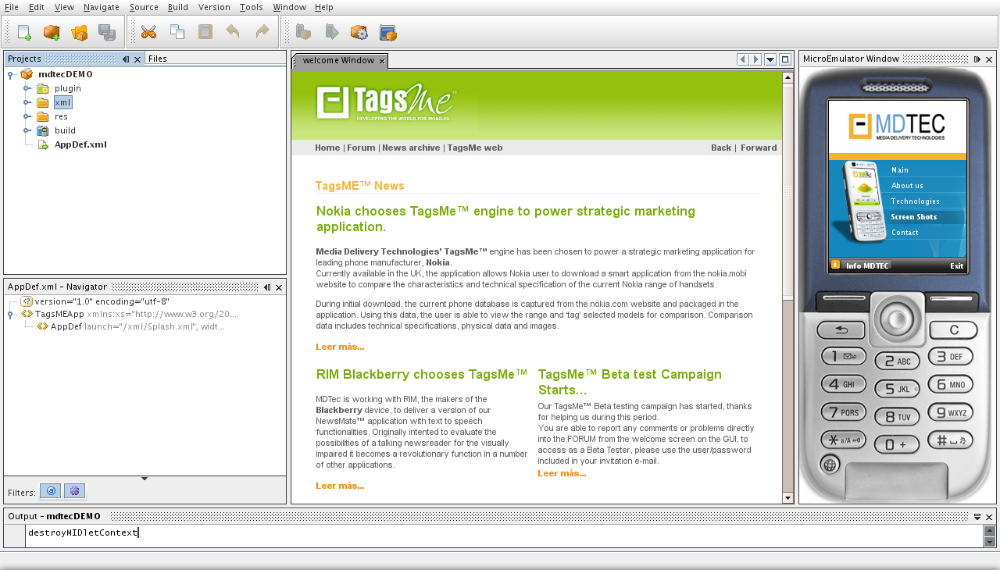
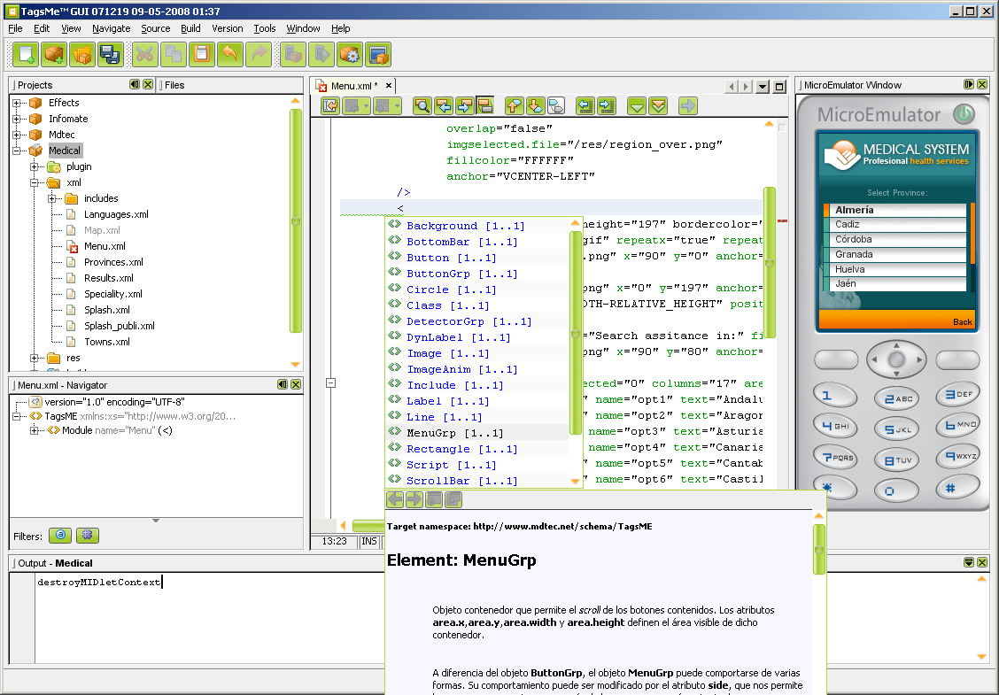
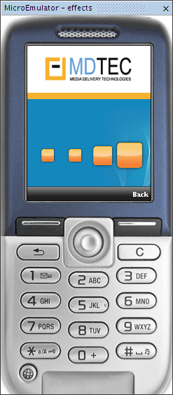
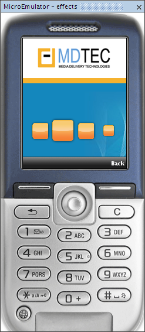

|  |
| TagsME welcome window and
Microemulator running a TagsMe application. |
|  |
| A Windows screenshot, with a
SkinLF Look and Feel, showing the XML's editor integrated help and the
result application running on Microemulator. More TagsMe Screenshots: Linux Screenshot with Default Look and Feel showing attribute value completion. |
<?xml version="1.0" encoding="UTF-8"?>
<TagsME xmlns='http://www.mdtec.net/schema/TagsME'xmlns:xs='
http://www.w3.org/2001/XMLSchema-instance'xs:schemaLocation='
http://www.mdtec.net/schema/TagsME http://www.mdtec.net/schema/TagsME'>
<Module name="Fx3" >
<Class name="buttons"
overlap="true"
drawtext="false"
img.file="/res/ico.png"
y="140"
img.width="22"
img.height="22"
anchor="VCENTER-HCENTER"
onunselect="ic?.img.width=22;ic?.img.height=22;"
/>
<Include name="top"file="/xml/includes/Top.xml"/>
<ButtonGrp name="Screens" columns="4" anim.frames="10" area.x="0"
area.width="180" >
<Button name="ic1" onselect="setBig(ic1);setMedium(ic2);"
text="Icon 1" x="30" class="buttons" />
<Button name="ic2" onselect="setBig(ic2);setMedium(ic1);
setMedium(ic3);" text="Icon 2" x="70" class="buttons" />
<Button name="ic3" onselect="setBig(ic3);setMedium(ic2);
setMedium(ic4);" text="Icon 3" x="110" class="buttons" />
<Button name="ic4" onselect="setBig(ic4);setMedium(ic3);"
text="Icon 4" x="150" class="buttons"/>
</ButtonGrp>
<Include name="bar" file="/xml/includes/Back_bar.xml"/>
<Script>
private void setBig( Object object )
{
object.img.width = 44;
object.img.height = 44;
}
private void setMedium( Object object )
{
object.img.width = 33;
object.img.height = 33;
}
</Script>
</Module>
</TagsME>
|  |
 |
{kind=link}
{kind=link}
{kind=link}